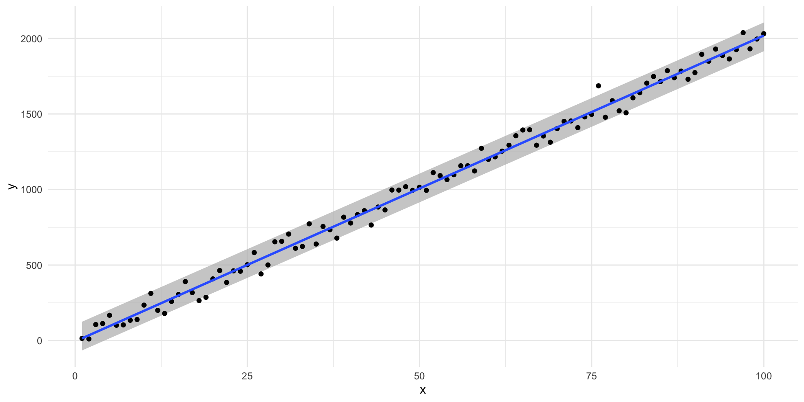
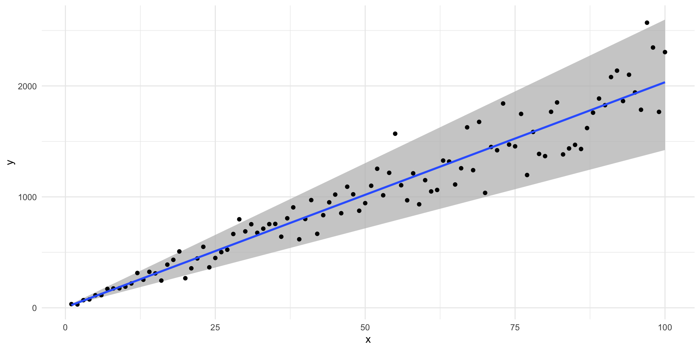

library(tidyverse)
library(poliscidata)
library(modelsummary)
library(broom)
library(ggdist)Statistical Inference
Packages
set.seed(222)Consistency and bias
To illustrate these concepts, we are going to look at the relationship between an individual’s feelings towards President Obama and whether or not they identify as a Democrat. We will use responses to the NES, which can be accessed here:
poliscidata::nesConsistency
Let’s take a small, pure random sample from the NES. We will start with a sample of 100 respondents, or 2% of the survey respondents.
nes_100 <- nes |>
sample_n(100) |>
select(caseid, obama_therm, dem)
glimpse(nes_100)Rows: 100
Columns: 3
$ caseid <dbl> 405, 5672, 372, 3522, 3882, 1437, 6178, 1148, 5379, 5953, …
$ obama_therm <dbl> 100, 85, 40, 100, 100, 100, NA, 60, 50, 100, 70, 100, NA, …
$ dem <dbl> 1, 1, 0, 1, 0, 0, 0, 0, 0, 0, 0, 1, 0, 0, 1, 0, 1, 1, 0, 0…Let’s fit a model using these 100 people:
m <- lm(obama_therm ~ dem, data = nes_100)
modelsummary(m,
coef_rename = c(dem = "Democrat"),
statistic = "conf.int",
stars = T)| (1) | |
|---|---|
| (Intercept) | 47.268*** |
| [40.450, 54.085] | |
| Democrat | 44.192*** |
| [33.383, 55.000] | |
| Num.Obs. | 93 |
| R2 | 0.420 |
| R2 Adj. | 0.414 |
| AIC | 871.6 |
| BIC | 879.2 |
| Log.Lik. | −432.813 |
| F | 65.961 |
| RMSE | 25.41 |
| + p < 0.1, * p < 0.05, ** p < 0.01, *** p < 0.001 |
Our estimate for the party ID coefficient is 44.192. In other words, we found that individuals who identify as Democrats feel, on average, 44.2 points better about President Obama than individuals who do not identify as Democrats.
But we know that if we take a different pure random sample of 100 people from the NES, we will get a different estimate. For example:
nes_100 <- nes |>
sample_n(100) |>
select(caseid, obama_therm, dem)
glimpse(nes_100)Rows: 100
Columns: 3
$ caseid <dbl> 6111, 148, 1913, 6246, 6640, 3983, 6779, 3650, 1452, 4943,…
$ obama_therm <dbl> 85, 100, 80, NA, 50, 100, NA, 70, 100, 50, 70, 70, 60, 85,…
$ dem <dbl> 1, 1, 0, 0, 0, 1, 1, 0, 1, 1, 1, 1, 0, 1, 1, 1, 0, 1, 1, 0…Let’s fit a new model using these 100 people:
m <- lm(obama_therm ~ dem, data = nes_100)
modelsummary(m,
coef_rename = c(dem = "Democrat"),
statistic = "conf.int",
stars = T)| (1) | |
|---|---|
| (Intercept) | 39.057*** |
| [31.878, 46.235] | |
| Democrat | 42.548*** |
| [31.822, 53.274] | |
| Num.Obs. | 96 |
| R2 | 0.398 |
| R2 Adj. | 0.391 |
| AIC | 904.3 |
| BIC | 912.0 |
| Log.Lik. | −449.166 |
| F | 62.030 |
| RMSE | 26.05 |
| + p < 0.1, * p < 0.05, ** p < 0.01, *** p < 0.001 |
Let’s do this many times and see how varied our estimates are:
random_sample_nes <- function(n) {
nes_sample <- nes |>
sample_n(n) |>
select(caseid, obama_therm, dem)
m <- lm(obama_therm ~ dem, data = nes_sample)
dem_estimate <- tidy(m) |>
filter(term == "dem") |>
pull(estimate)
dem_estimate
}
nes_100_dem_estimates <- map(rep(100, 1000), random_sample_nes)
ggplot(tibble(beta_dem = unlist(nes_100_dem_estimates)),
aes(x = beta_dem)) +
stat_halfeye() +
theme_minimal()I now have 1,000 different estimates for dem drawn from 1,000 different models fit from 1,000 different random samples pulled from the same population. The only reason these estimates are different is random chance.
This is okay! But remember, we always need to be upfront about this uncertainty. Generally, we need to accept that 95% of these possible values of our coefficient could be the true coefficient.
Note
The average estimate of the dem coefficient created from these repeated random samples will be the true estimate because this sample is not biased.1 We will talk about that more shortly.
We cannot take an infinite number of random samples of our population to calculate these possible values. In fact, we often cannot take more than one random sample of our population. So, we need a strategy that maximizes the chance that the single random sample we draw will produce an estimate of our coefficient that is as close to the true coefficient as possible. To do this, we need to tighten the spread of these possible values around their mean (our best guess at the true coefficient). In other words, we want to more consistent estimates.
How do we do this? We increase our sample size! In other words, we increase the amount of information we are using to build our understanding of the relationship between individuals’ feelings towards Obama and their political affiliation.
To demonstrate, let’s first look at repeated samples of 300 people, or 5% of the survey respondents. Then let’s also look at repeated samples of 1,000 people, or 17% of the survey respondents.
nes_300_dem_estimates <- map(rep(300, 1000), random_sample_nes)
nes_1000_dem_estimates <- map(rep(1000, 1000), random_sample_nes)tibble(sample_size = 100,
beta_dem = unlist(nes_100_dem_estimates)) |>
bind_rows(
tibble(
sample_size = 300,
beta_dem = unlist(nes_300_dem_estimates)
)
) |>
bind_rows(
tibble(
sample_size = 1000,
beta_dem = unlist(nes_1000_dem_estimates)
)
) |>
ggplot(aes(x = beta_dem, fill = factor(sample_size))) +
stat_halfeye(alpha = 0.5) +
theme_minimal() +
theme(legend.position = "bottom") +
labs(fill = "Sample size")The larger our sample size, the narrower the range of plausible alternative values of the dem coefficient are. They are more consistent.
The more consistently we produce estimates of our coefficient of interest, the more confident we can be that any single random sample from our population will tell us something close to the truth about the relationship between our dependent and independent variables.
Bias
At the end of the day, we are interested in that coefficient. We want to get as close as possible to the true coefficient (or the true relationship between our predictors and outcome of interest). Therefore, we want to avoid bias.
To illustrate, let’s see what happens to our understanding of the relationship between an individual’s feelings towards Obama and their party affiliation if we only look at male respondents.
nes_men <- nes |>
filter(gender == "Male") |>
select(caseid, obama_therm, dem, gender)
glimpse(nes_men)Rows: 2,847
Columns: 4
$ caseid <dbl> 408, 3282, 1942, 118, 5533, 5880, 1651, 6687, 5903, 629, 1…
$ obama_therm <dbl> 15, 100, 70, 30, 70, 45, 50, 60, 15, 100, NA, 0, 45, 30, 4…
$ dem <dbl> 0, 1, 0, 1, 0, 0, 0, 0, 0, 1, 1, 0, 0, 0, 0, 0, 0, 0, 0, 0…
$ gender <fct> Male, Male, Male, Male, Male, Male, Male, Male, Male, Male…Let’s take a random sample of 1,000 people from this biased sample of our population and estimate the relationship between their feelings towards Obama and their party affiliation.
nes_1000_men <- sample_n(nes_men, 1000)
m <- lm(obama_therm ~ dem, data = nes_1000_men)
modelsummary(m,
coef_rename = c(dem = "Democrat"),
statistic = "conf.int",
stars = T)| (1) | |
|---|---|
| (Intercept) | 43.575*** |
| [41.303, 45.847] | |
| Democrat | 41.641*** |
| [37.722, 45.559] | |
| Num.Obs. | 925 |
| R2 | 0.320 |
| R2 Adj. | 0.320 |
| AIC | 8838.3 |
| BIC | 8852.8 |
| Log.Lik. | −4416.169 |
| F | 435.015 |
| RMSE | 28.65 |
| + p < 0.1, * p < 0.05, ** p < 0.01, *** p < 0.001 |
Our estimate is consistent: we demonstrated above that a 1,000 person sample is large enough to give us confidence that this single sample’s coefficient is probably close to the average we would draw from an infinite number of random samples of our population.
But, I am not necessarily confident that this estimate is close to the true coefficient. That’s because we have a biased sample. We are interested in learning what the relationship is between individuals’ feelings towards Obama and their political affiliation across the whole US voting population. But we have only used information on people who identified as male to learn about that relationship.
To illustrate, here is the estimate produced by a 1,000 people random sample of the whole pool of respondents:
nes_1000 <- sample_n(nes, 1000)
m <- lm(obama_therm ~ dem, data = nes_1000)
modelsummary(m,
coef_rename = c(dem = "Democrat"),
statistic = "conf.int",
stars = T)| (1) | |
|---|---|
| (Intercept) | 43.102*** |
| [40.732, 45.473] | |
| Democrat | 41.505*** |
| [37.724, 45.287] | |
| Num.Obs. | 934 |
| R2 | 0.332 |
| R2 Adj. | 0.332 |
| AIC | 8929.3 |
| BIC | 8943.8 |
| Log.Lik. | −4461.647 |
| F | 463.948 |
| RMSE | 28.73 |
| + p < 0.1, * p < 0.05, ** p < 0.01, *** p < 0.001 |
When we include people who do not identify as male in our population from which we draw our random sample, we get a smaller estimate of the association between an individual’s feelings towards Obama and their party affiliation.
Our coefficient estimate was artificially high because of our biased sample. This could meaningfully effect our understanding of the substantive significance of party affiliation on feelings towards Obama.
Heteroscedasticity
One of the things you need to assume is true when you use linear regression to learn about the relationship between your outcome of interest and predictors is that your random error varies consistently across all values of your predictors.
To illustrate, let’s return to our made up model from last week.
\[ Y = 10 + 20X_1 + \epsilon \]
Remember, that \(y_i\) will rarely equal exactly \(10 + 20x_i\). There will always be a little random error, \(\epsilon\), sprinkled in there. If all is going well, this random error is independent of \(X\). In other words, you don’t need to know what the value of \(x_i\) is to work out what the random error is.
Let’s find \(Y\) in a world in which our error is normally distributed with a standard deviation of 50.
Note
Remember, this means we are just randomly drawing a value from this distribution and adding it to \(10+20x_1i\) to find \(y_i\):
ggplot(tibble(error = rnorm(1e6, mean = 0, sd = 50)), aes(x = error)) +
geom_density(fill = "#A2E3C4") +
theme_minimal()error <- rnorm(100, mean = 0, sd = 50)
df <- tibble(
x = 1:100,
error = error,
y = 10 + 20*x + error
)
df# A tibble: 100 × 3
x error y
<int> <dbl> <dbl>
1 1 -15.6 14.4
2 2 -38.9 11.1
3 3 36.3 106.
4 4 22.9 113.
5 5 57.8 168.
6 6 -28.4 102.
7 7 -46.1 104.
8 8 -35.3 135.
9 9 -50.3 140.
10 10 25.0 235.
# ℹ 90 more rowsFor any given value of \(x_i\), the random error has an equal chance of being any normally distributed value with a standard error of 50. In other words, 95 percent of the time, the random error is going to be some value between -98 and 98 (or \(1.96*50\), remember back to confidence intervals).
We can plot this to get a better look at what consistent variation in the error term looks like:
ggplot(df, aes(x = x, y = y)) +
geom_ribbon(aes(ymin = 10 + 20*x - 95, ymax = 10 + 20*x + 95),
fill = "grey", alpha = 0.75) +
geom_point() +
geom_smooth(method = "lm", se = F) +
theme_minimal()
When this is the case, we have homoscedasticity.
What happens if the variance in the error term changes across \(x_i\)?
df <- tibble(x = 1:100) |>
rowwise() |>
mutate(error = rnorm(1, sd = x*3),
y = 10 + 20*x + error)
df# A tibble: 100 × 3
# Rowwise:
x error y
<int> <dbl> <dbl>
1 1 3.03 33.0
2 2 -19.9 30.1
3 3 -1.46 68.5
4 4 -14.6 75.4
5 5 2.35 112.
6 6 -16.1 114.
7 7 20.2 170.
8 8 3.91 174.
9 9 -14.4 176.
10 10 -19.8 190.
# ℹ 90 more rowsHere, our error term is not independent of \(X\). We need to know \(x_i\) before we can work out the error value. Here, it is a random value drawn from a normal distribution that has a standard deviation equal to three times the given value of \(x_i\).
Let’s visualize that:
df |>
mutate(ymin = 10 + 20*x - x * 3 * 1.96,
ymax = 10 + 20*x + x * 3 * 1.96) |>
ggplot(aes(x = x, y = y, ymin = ymin, ymax = ymax)) +
geom_ribbon(fill = "grey", alpha = 0.75) +
geom_point() +
geom_smooth(method = "lm", se = F) +
theme_minimal()
Here, we have heteroscadasticity. When this is the case, we will have biased standard errors on our coefficient estimates. We cannot tell which way this bias will lean: we could be over or underestimating our confidence in our estimates.
Footnotes
Actually, it won’t be because we have not taken an infinite number of random samples of 100 people (we have only taken 1,000 random samples). If we were able to take an infinite number of random samples (which we can only in theory), the average of those estimated coefficients would be the true coefficient.↩︎